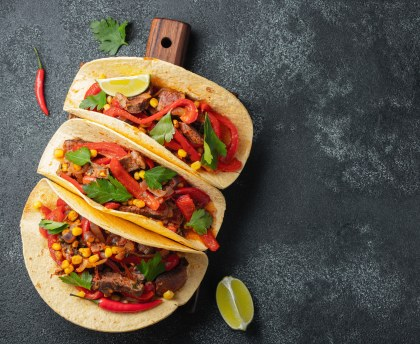

Temps de cuisson : 1h
Difficulté : Facile
A la poêle, faire dorer l'oignon émincé dans un peu d'huile d'opve.
Rajouter la viande, assaisonner et laisser cuire 5 min.
Laver les feuilles de laitue.
Couper les tomates et le poivron en petits dés.
Incorporer le tout à la poêlée avec le coups de tomate, et poursuivre la cuisson pendant 5 min.
Egoutter les haricots rouges et les ajouter 2 min avant la fin de cuisson.
Hors du feu, ajuster l'assaisonnement et saupoudrer généreusement de cumin; on peut aussi rajouter quelques gouttes de Tabasco.
Garnir les tortillas de préparation et les refermer en les roulant comme des crêpes. Disposer 1 feuille de laitue sur chaque tacos avant de servir.